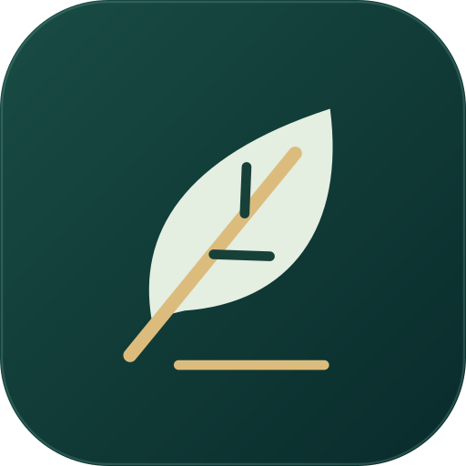
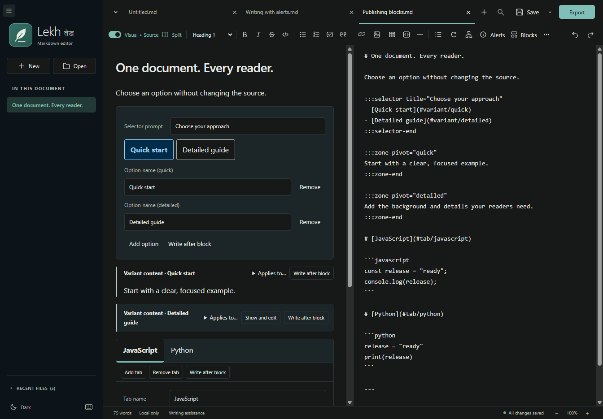
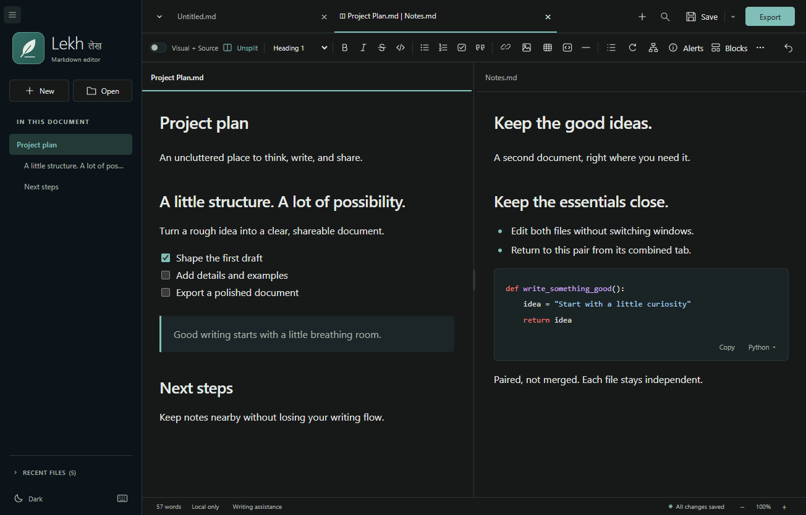
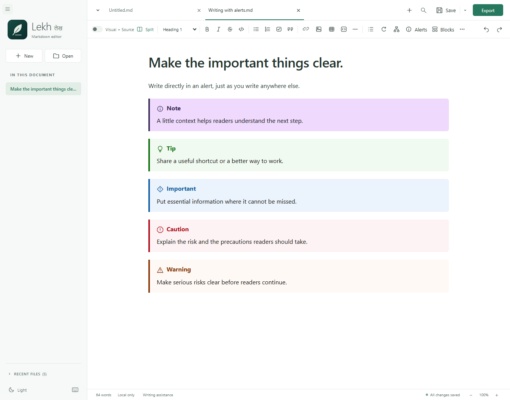

Visual or source. Your choice.
Write with formatting, lists, tables, and checkboxes, or edit exact Markdown in Source. Visual + Source lets you edit both side by side; Source + Preview adds a read-only rendering alongside your text.

Windows x64 / Markdown editor / MIT licensed
A calm space for Markdown. Write visually or in Source, edit both side by side, bring ideas to life with offline diagrams, and export your work to Word or PDF.
Opens GitHub Releases. Choose the Windows x64 setup .exe; source ZIP and SHA-256 checksums are listed alongside it. The installer is unsigned and may trigger Windows or browser warnings.
Real screenshots of the desktop application, using sample documents. No accounts, document uploads, or cloud sync.



No account, analytics, or document uploads. The offline installer includes the desktop runtime; Windows 10/11 x64 and .NET Framework 4.8 or newer are required. Node.js, Word, and Pandoc are not required.
Write with formatting, lists, tables, and checkboxes, or edit exact Markdown in Source. Visual + Source lets you edit both side by side; Source + Preview adds a read-only rendering alongside your text.
Open multiple tabs, pair two files, resize the divider, and work independently in either pane. Light and Dark themes and Focus mode keep the workspace adaptable.
Render supported Mermaid diagrams locally in Visual and Preview. Supported diagrams become images in Word and PDF exports.
Export the active document to Word or PDF, including supported images, syntax-highlighted code, and diagrams. Export does not save the Markdown file.
Search with case, whole-word, and regex options, use capture-group replacements, follow the heading outline, and refresh a generated table of contents.
Choose embedded images or relative assets. Unsaved-change prompts, external-edit detection, atomic saves, and recovery drafts help protect work. Recovery is not a backup.
Windows 10/11 / x64
Unsigned software. The application, setup EXE, and internal MSI are not code-signed. Windows, browsers, or organization policies may warn about or block them. Install only software you trust, verify the checksums, and follow your organization's policies. Do not disable security protections. Other operating systems and architectures are not packaged or tested.
Lekh is MIT licensed and provided as-is, without warranty. Keep backups of important documents. Questions and feedback are welcome through GitHub issues.
Independent derivatives are permitted under MIT. Review and test your version yourself, identify it as your fork, and define your own support policy. See the support policy, contribution guidance, and build instructions.